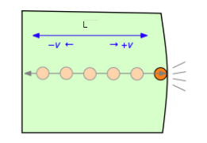
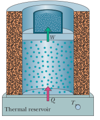

İdeal Gazlar Kanunu (İdeal Gas Law)
Önce bazı terimler. Bir mol (mole) terimi mesela, mol önceden belirli bir molekül sayısıdır. Tutarlı olması için herkesin kabul ettiği bir sayı, özel bir temel parçacığa bağlanmış, bir mol 12 gramlık karbon-12 içindeki atom sayısı [2, sf. 550]. Mole molekül sayısı aynı zamanda ünlü Avagadro sabitidir, $N_A$ ile gösterilir,
$$ N_A = 6.02 x 10^{23} mol^{-1} $$
Yani bir mol içinde üstteki kadar molekül var. Bir materyal içinde kaç mol var hesabı için $n = N / N_A$ kullanabiliriz, $N$ tüm molekül sayısı, $N_A$ bir mol içindeki molekül sayısı, bölüm bize istenen sonucu verir.
Basınç
Peki mikro etkileşimlerden yola çıkarak basınç kavramını türetebilir miyiz acaba? 19'uncu yüzyıl sonlarına doğru bu başarıldı. Basıncın gaz moleküllerinin bir yüzeye çarpmasından ortaya çıktığını hatırlayalım. Bu kuvvet tabii ki Newton kanunundan hareketle,
$$ f = m a = m \frac{\mathrm{d} v}{\mathrm{d} t} $$
Hız $v$'ye molekül içinde olduğu kabın / yüzey duvarına çarptığında ona dik olan hız diyelim [1]. Bu türevi hesaplamak için, ki birim zamanda hız değişimi gerekiyor, kenarları $L$ uzunluğunda bir küp içinde tek bir gaz molekül olduğunu düşünelim.
Basitleştirme amacıyla diyelim ki bu molekül sürekli küp kutu içinde ileri geri gidip geliyor, bir duvara çarpınca bir süre sonra geri geliyor. Bu molekül bir duvara çarptığında $v$ hızında çarptığında (yani $mv$ momentumuyla) elastik olarak geri sekecektir, ve $-v$ ile tam ters yöne geri gitmeye başlayacaktır.

O zaman her çarpışma için hız değişimi $2v$, momentum değişimi ise $2mv$ olur.
Tabii aslında eğer daha genel formülize etmek gerekirse bu çarpışma sırasında $\bar{v}$ hızının duvara dik olan bileşeni $v_x$'yi düşünüyoruz.

Yani momentum değişimi
$$ \Delta p_x = (-m v_x) - (m v_x) = - 2 m v_x $$
Demek ki duvara transfer edilen momentum $2 m v_x$.
Birim zaman $\Delta t$'ye bir molekün iki çarpışma arasında geçen zaman dersek, ve $v_x$ hızında $2L$ yol katedilmişse, $\Delta t = 2 L / v_x$ demektir, ve
$$ F = \frac{\Delta p_x}{\Delta t} = \frac{2 m v_x}{2 L / v_x} = \frac{m v_x^2}{L} $$
Basınç birim alana uygulanan kuvvettir, ve küpün bir kenarının $L^2$ alanında olduğunu düşünürsek,
$$ P = \frac{m v^2}{L^3} = \frac{m v^2}{V} $$
$V$'yi kutunun hacmi olarak aldık, ve $V = L^3$.
Birden fazla molekülü düşünmek istiyoruz şimdi, mesela bir averaj üzerinden.. Fakat her molekül hem negatif hem pozitif yönde aşağı yukarı aynı miktarda hareket yapar (rasgele hareket olduğu için) ve bu tür bir hareket üzerinden averaj almak bizi sıfır değerine götürür. Bu sebeple ortalamasını almadan önce hızların karesini almak istiyoruz,
$$ \bar{v^2} = \frac{v_1^2 + v_2^2 + ... + v_N^2 }{N} = \frac{\sum_i v_i^2}{N} $$
ve ortalama değeri bulmak için $\sqrt{\bar{v^2}}$ kullanıyoruz. Bu hesaba kök kare ortalaması (root mean square -RMS-) ismi de verilir. Şimdi tüm $N$ moleküller üzerinden bir basınç hesaplamak istersek, $N$ tane molekül, ama belli bir anda sadece Kartezyen kordinat sisteminde sadece üç yönden sadece biri yönünde etki var, o zaman $N$ ile çarpıp 3'e bölmek lazım,
$$ P = \frac{N}{3} \frac{m \bar{v^2}}{V} $$
Bu formül içinde bir kinetik enerji formülasyonu görülebiliyor, averaj kinetik enerjiye $\epsilon = m \bar{v^2} / 2$ dersek, üstteki formülü
$$ PV = \frac{N}{3} m \bar{v^2} = \frac{2}{3} N \epsilon $$
olarak yazabiliriz.
Eğer bu formülü sıcaklık içerek şekilde değiştirmek istiyorsak; biliyoruz ki sisteme eklenen her Joule enerji ve bir derece sıcaklık değişimi arasındaki ilişkiyi $k$ sabiti kontrol eder [5, 29-16] bu sabit $k = 1.38 x 10^{23}$ Joule / Kelvin'dir, o zaman enerjiden sıcaklığa geçiş için $kT$ kullanabiliriz, hatta bir $3/2$ eklenerek üstteki 2/3 iptali amaçlanır,
$$ \epsilon = \frac{3}{2} k T $$
Ve,
$$ PV = \left( \frac{2}{3} N \right) \left( \frac{3}{2} k T \right) = N k T $$
Devam edelim, $n = N / N_A$ olduğunu da biliyoruz ki $N_A = 6.02 x 10^{23}$, Avagadro'nun sayısı, $n$ örneklemdeki mol sayısı, $N$ ise örneklemdeki tüm moleküller [2, sf. 550],
$$ PV = n N_A k T $$
Tabii bu bizi $R$ denen bir diğer sabite götürüyor, $R = 8.31 J/mol \cdot K$. Onun $k$ ve $N_A$ ile ilişkisi şöyle,
$$ k = \frac{R}{N_A} $$
O zaman,
$$ PV = n R T $$
İdeal gazlar kanununa erişmiş olduk.
Mol sayısını şöyle ifade edebilirdik,
$$ n = m / w_m $$
ki $m$ gazın kütlesi, $w_m$ ise moleküler ağırlık. Bunları birbirine bölünce doğal olarak mol sayısı ortaya çıkar, $n$'yi iki üstteki formüle koyunca,
$$ PV = \frac{m}{w_m} R T $$
Bir düzenleme yaparsak,
$$ P = \frac{m}{V} \frac{R}{w_m} T $$
$m/V$ yoğunluk, ona $\rho$ diyebiliriz, $R / w_m$ ise evrensel gaz sabiti $R$'nin gazın moleküler ağırlığına bölünmüş hali, ona yeni bir sabit $R_m$ diyebiliriz, o zaman daha öz
$$ P = \rho R_m T $$
formülü elde edilir.
İç Enerji (Internal Energy)
Daha önce görmüştük, tek atomun ortalama hareketsel kinetik enerjisi sıcaklığa bağlıydı, ona daha önce $\epsilon$ demiştik, şimdi $K_{avg}$ diyelim, ki $K_{avg} = 3/2 k T$. O zaman, ve $n$ mol miktarında bir örneklemin içinde $n N_A$ molekül olacağı için, örneklemin iç enerjisi $E_{int}$ şöyle hesaplanabilir [2, sf. 564],
$$ E_{int} = (n N_A) K_{avg} = (n N_A) (\frac{3}{2} k T) $$
Daha önce gördük $k = R/N_A$, üstteki $E_{int}$ içine koyarsak,
$$ E_{int} = \frac{3}{2} n R T $$
Mol Spesifik Isı (Molar Specific Heat of a Gas)
Bir gazın sıcaklık artışına tekabül eden ısı enerjisi (girdisi) faydalı olabilecek bir büyüklüktür, fakat aynı sıcaklık değişimine giden ayrı yollar, farklı ısı hesaplarına sebep verebilir. Değişimin en çok ortaya çıkan iki versiyonu için farklı bir mol spesifik ısı öne sürmek daha iyi olur, bunlardan biri basınç sabit tutulduğu durumdaki, diğeri de hacim sabit tutulduğu durumdaki mol spesifik ısı.
$$ Q = n C_P \Delta T \qquad (2) $$
$$ Q = n C_V \Delta T \qquad (1) $$
Üstteki $C_V$ sabit hacimdeki mol spesifik ısı, $C_P$ sabit basınçtaki.
Sabit hacim durumu için $Q = \Delta E_{int}$, o zaman
$\Delta E_{int} = n C_V \Delta T$
Eğer sıcaklıkta değişim yoksa
$E_{int} = n C_V T$
Bu denklem tüm ideal gazlar için geçerlidir, ideal gaz derken molekülünde birden fazla atom olan gazlar için.
Basınç sabit tutulduğu durumdaki molar spesifik ısıdan hareket ederek bir ilginç formüle daha ulaşabiliriz; Bu durumda ideal gazın sıcaklığını daha önce olduğu gibi ufak $\Delta T$ kadar arttırdığımızı düşünüyoruz, fakat şimdi eklenen enerji hem gazın sıcaklığını arttıracak, hem de iş yapacak, altta görülen pistonu üste itmek gibi (çünkü basınç sabit dedik, hacim sabit demedik).

Erişmek istediğimiz hem $C_P$ hem $C_V$ içeren bir formül bulmak, o zaman Termodinamiğin İlk Kanunu ile başlayalım,
$$ \Delta E_{int} = Q - W $$
$E_{int}$ bir materyelin iç ısısı, ve sadece materyelin o anki iç konumuna bağlı (sıcaklığı, basıncı ve hacmi). $Q$ değişkeni sistemin çevresindekilerle yaptığı ısı alışverisini temsil ediyor, artı değerler materyel ısı çekiyor, negatif ısı veriyor demektir. $W$ ise sistemin yaptığı iş (work). Eğer sistem genişliyorsa mesela iş yapılıyordur, genişleme ya da daralma yoksa $W=0$.
Üstteki formül içine bildiğimiz diğer formülleri koyabiliriz, mesela (1)'i sokarsak,
$$ n C_V \Delta T = Q - W \qquad (5) $$
Yapılan iş $W$ hesaplamak için üstteki resmi düşünelim, alt bölmedeki gaz pistonu yukarı doğru iterek iş yapabilir. Bu işin pistonu $\vec{F}$ kuvvetiyle ve $\mathrm{d} \vec{s}$ kadar sonsuz ufak bir değişime uğrattığını düşünelim. Bu değişim çok ufak olduğu için $\vec{F}$'nin o değişim sırasında sabit olduğunu farz edebiliriz [2, sf. 529]. Bir diğer çıkarsama $\vec{F}$'nin $p A$'ya eşit olduğu - basınç $p$ kuvvet bölü alan $A$ ise aynı $p$ ile $A$'yi çarparsak kuvvete geri geliriz. Diferansiyel yapılan iş
$$ \mathrm{d} W = \vec{F} \cdot \mathrm{d} \vec{s} = (pA) (\mathrm{d} s) = p (A \mathrm{d} s) $$
O zaman $V_i$ ile $V_f$ hacim değişimleri arasında yapılan iş üstteki formülün entegralidir,
$$ W = \int \mathrm{d} W = \int_{V_i}^{V_f} p \mathrm{d} V $$
Bu hesabın detaylarına şimdi girmeyeceğiz, ama baktığımız sabit hacim durumu için üstteki hesap daha basitleşiyor, $W = p \Delta V$. Ayrıca ideal gaz kanunu $pV = n R T$ olduğu için $p \Delta V = n R \Delta T$ de yazılabilir, o zaman $p \Delta V$ yerine $n R \Delta T$ kullanmak mümkün, (5)'e sokarsak,
$$ n C_V \Delta T = Q - n R \Delta T $$
$Q$ ise basınç sabit durumdaki (2) formülünden geliyor zaten,
$$ n C_V \Delta T = n C_P \Delta T - n R \Delta T $$
Her şeyi $n \Delta T$ ile bölersek,
$$ C_V = C_P - R $$
Ya da
$$ C_P - C_V = R \qquad (4) $$
Bir diğer kullanışlı ilginç sabit
$$ \gamma = C_P / C_V \qquad (3) $$
oranıdır. Bu oran, politropik (polytrophic) gazlar denen, sabit hacimdeki durumun enerjisinin hesaplamak için faydalı. Tek bir mol için
$$ E_{int} = C_V T $$
ile başlarsak, ve $T = p / R\rho$ formülünü $T$'ye sokunca [3, sf. 295],
$$ E_{int} = \frac{C_V}{R} \frac{p}{\rho} $$
Gruplamayı bu şekilde yaptık çünkü birazdan $C_V/R$ yerine başka bir formül bulacağız. Devam edelim (3)'ten hareketle $\gamma C_V = C_P$ diyebiliriz. Bu formülü $C_P$ için (4)'ye koyalım,
$$ \gamma C_V - C_V = R \implies C_V(\gamma-1) = R \implies \frac{C_V}{R} = \frac{1}{\gamma-1} $$
Bu sonuç iki üstteki ilk terim ile uyumlu, o zaman
$$ E_{int} = \frac{p}{\rho (\gamma - 1)} $$
Bu form politropik ideal gazların konum formülü (equation of state for an ideal polytropic gas) olarak biliniyor.
Kaynaklar
[1] Chang, Physical Chemistry for the Biosciences, https://chem.libretexts.org/@go/page/41408
[2] Resnick, Fundamentals of Physics, 10th Ed
[3] Leveque, Finite Volume Methods
[5] Feynman, Feynman Lectures on Physics, I